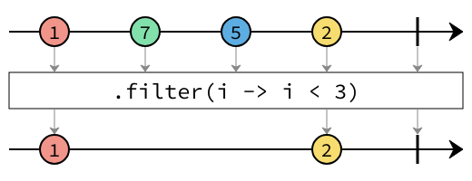
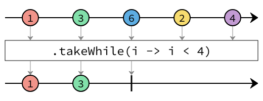
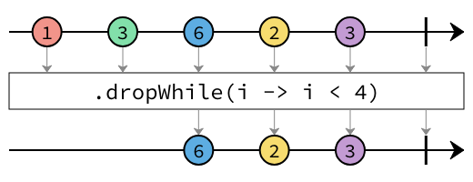

Interface FilteringOperators<T>
- Type Parameters:
T- The type of the elements that the stream emits.
- All Known Subinterfaces:
ProcessorBuilder<T,,R> PublisherBuilder<T>
The documentation for each operator uses marble diagrams to visualize how the operator functions. Each element flowing in and out of the stream is represented as a coloured marble that has a value, with the operator applying some transformation or some side effect, termination and error signals potentially being passed, and for operators that subscribe to the stream, an output value being redeemed at the end.
Below is an example diagram labelling all the parts of the stream.

-
Method Summary
Modifier and TypeMethodDescriptiondistinct()Creates a stream consisting of the distinct elements (according toObject.equals(Object)) of this stream.Drop the longest prefix of elements from this stream that satisfy the givenpredicate.Filter elements emitted by this publisher using the givenPredicate.limit(long maxSize) Truncate this stream, ensuring the stream is no longer thanmaxSizeelements in length.skip(long n) Discard the firstnof this stream.Take the longest prefix of elements from this stream that satisfy the givenpredicate.
-
Method Details
-
filter
Filter elements emitted by this publisher using the givenPredicate.Any elements that return
truewhen passed to thePredicatewill be emitted, all other elements will be dropped.
- Parameters:
predicate- The predicate to apply to each element.- Returns:
- A new stream builder.
-
distinct
FilteringOperators<T> distinct()Creates a stream consisting of the distinct elements (according toObject.equals(Object)) of this stream.
- Returns:
- A new stream builder emitting the distinct elements from this stream.
-
limit
Truncate this stream, ensuring the stream is no longer thanmaxSizeelements in length.
If
maxSizeis reached, the stream will be completed, and upstream will be cancelled. Completion of the stream will occur immediately when the element that satisfies themaxSizeis received.- Parameters:
maxSize- The maximum size of the returned stream.- Returns:
- A new stream builder.
- Throws:
IllegalArgumentException- IfmaxSizeis less than zero.
-
skip
Discard the firstnof this stream. If this stream contains fewer thannelements, this stream will effectively be an empty stream.
- Parameters:
n- The number of elements to discard.- Returns:
- A new stream builder.
- Throws:
IllegalArgumentException- Ifnis less than zero.
-
takeWhile
Take the longest prefix of elements from this stream that satisfy the givenpredicate.
When the
predicatereturns false, the stream will be completed, and upstream will be cancelled.- Parameters:
predicate- The predicate.- Returns:
- A new stream builder.
-
dropWhile
Drop the longest prefix of elements from this stream that satisfy the givenpredicate.
As long as the
predicatereturns true, no elements will be emitted from this stream. Once the first element is encountered for which thepredicatereturns false, all subsequent elements will be emitted, and thepredicatewill no longer be invoked.- Parameters:
predicate- The predicate.- Returns:
- A new stream builder.
-